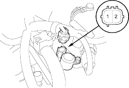
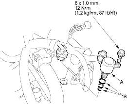

- Disconnect the torque converter clutch solenoid valve connector.

- Measure the resistance between the No. 1 and No. 2 terminals of the torque converter solenoid valve connector.
STANDARD: 12-25 ohm;
- Replace the torque converter clutch solenoid valve if the resistance is out of standard.
- If the resistance is within the standard, connect the No. 2 terminal to the battery positive terminal and connect the No. 1 terminal to the battery negative terminal. A clicking sound should be heard. Replace the torque converter clutch solenoid valve if no sound is heard when connecting the battery positive terminal.
- Remove the mounting bolt and the torque converter clutch solenoid valve (A).

- Install a new torque converter clutch solenoid valve with new O-rings (B). While installing the valve, do not allow dust or other foreign particles to enter the transmission.
- Check the connector for rust, dirt, or oil, then connect the connector securely.